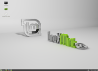

Linux Mint
Archivierte Anleitung
Dieser Artikel wurde archiviert, da er - oder Teile daraus - nur noch unter einer älteren Ubuntu-Version nutzbar ist. Diese Anleitung wird vom Wiki-Team weder auf Richtigkeit überprüft noch anderweitig gepflegt. Zusätzlich wurde der Artikel für weitere Änderungen gesperrt.

Linux Mint  ist eine GNU/Linux Distribution aus Irland, die sich durch ihr Bedienungskonzept, die vorinstallierte Software und ein anderes (grünes) Design von Ubuntu unterscheidet. Neben der ursprünglichen, auf Ubuntu basierenden Version gibt es inzwischen auch eine Version, die auf Debian basiert. Die Ubuntu-basierte Version beruht auf den jeweils aktuellen Ubuntu-LTS-Versionen. Linux Mint kann wie Ubuntu vor einer Installation auf der Festplatte mit einer Live-DVD getestet werden. Eine CD-Version ist nicht mehr verfügbar.
ist eine GNU/Linux Distribution aus Irland, die sich durch ihr Bedienungskonzept, die vorinstallierte Software und ein anderes (grünes) Design von Ubuntu unterscheidet. Neben der ursprünglichen, auf Ubuntu basierenden Version gibt es inzwischen auch eine Version, die auf Debian basiert. Die Ubuntu-basierte Version beruht auf den jeweils aktuellen Ubuntu-LTS-Versionen. Linux Mint kann wie Ubuntu vor einer Installation auf der Festplatte mit einer Live-DVD getestet werden. Eine CD-Version ist nicht mehr verfügbar.
Hinweis:
Bei ubuntuusers.de ist nur sehr begrenzt Hilfe zu Linux Mint zu finden. Linux Mint ist eine eigenständige Distribution und hat eine eigene Community (siehe unten). An diese sollte man sich auch wenden, wenn Fragen und Probleme auftauchen.
Unterschiede zu Ubuntu¶
|  |
| Mint 16 - Cinnamon Desktop |
Linux Mint nutzt die Ubuntu (bzw. Debian) Quellen (Upstream) und ergänzt diese durch eine eigene Paketquelle. Diese enthält die eigens entwickelten Pakete und veränderte Upstream Pakete . Die Mint eigenen Pakete enthalten eigens entwickelte Programme und Änderungen am zugrundeliegenden System.
Unfreie Codecs für Video- und Audiodateien sind bei Linux Mint vorinstalliert. Mit den MintTools (speziellen Werkzeugen), Feinschliff an vielen Ecken und Kanten sowie einem eleganten Aussehen versucht Mint, Einsteigern als auch Fortgeschrittenen den Umgang mit GNU/Linux so einfach wie möglich zu machen. Insbesondere Umsteiger von einem gewissen kommerziellen Betriebssystem, die sich nicht mit der Problematik unfreier Software auseinandersetzen wollten oder konnten, waren die ersten Fans von Linux Mint.
Der wichtigere Grund für die Entwicklung von Linux Mint war und ist aber die gezielte Ausrichtung auf die Wünsche der Endanwender, um genau dieser Zielgruppe die Möglichkeit eines leichten und problemlosen Umstiegs zu bieten. Nach Meinung der Entwickler von Linux Mint gingen bzw. gehen die dazu bisher in Ubuntu realisierten Lösungen nicht weit genug.
Linux Mint finanziert sich anders als Canonical ausschließlich aus Spenden und Sponsoring-Einnahmen.
Versionen¶
| aktuelle Versionen (vollständige Liste) | |||
| Version | Codename | basiert auf | Bemerkungen |
| Linux Mint 13 | Maya | Ubuntu 12.04 | LTS-Version ("Long Term Support") mit MATE, Cinnamon, Xfce oder KDE als Desktop-Oberfläche |
| Linux Mint 17.x | Qiana Rebecca Rafaela Rosa | Ubuntu 14.04 | LTS-Version ("Long Term Support") mit MATE, Cinnamon, Xfce oder KDE |
| Linux Mint 18 | Sarah | Ubuntu 16.04 | LTS-Version ("Long Term Support") mit MATE, Cinnamon oder Xfce |
| LMDE 2 | Betsy | Debian 8 | mit MATE oder Cinnamon |
Seit September 2010 steht ein auf Debian basierendes Linux Mint zur Verfügung: "Linux Mint Debian Edition" (z. Z. LMDE2). Aufgrund eines geringeren Funktionsumfang wird es nicht für Einsteiger beworben.
Aktualisierungen¶
Nicht unumstritten ist das System bzw. das Programm, das unter Linux Mint zur Information des Benutzers über anstehende Aktualisierungen (Updates) verwendet wird. Aktualisierungen werden von den Entwicklern in fünf Gruppen klassifiziert, von denen nur die ersten drei zur Aktualisierung vorgeschlagen werden. Dadurch kann es passieren, das bei Sicherheitslücken im Linux-Kernel die notwendige Aktualisierung vom Benutzer übersehen wird und man sich in falscher Sicherheit wiegt.
Das Gegenargument der Mint-Entwickler lautet, dass so beispielsweise bei Kernel-Updates Benutzer proprietärer Grafikkartentreiber vor einen möglicherweise unbenutzbaren System geschützt werden. Wenn man allerdings generell auf proprietäre Treiber (Kernelmodule) verzichtet, ist das kein Argument mehr.
In der Praxis sollte man selbst entscheiden, was einem wichtiger ist: ein zum jeweiligen Zeitpunkt möglichst sicheres System oder ein Aktualisierungsverfahren, das die (Un-)Kenntnisse von Computer-Laien berücksichtigt. Denn wenn man im Problemfall nicht immer vor Ort verfügbar sein kann, hat dieser Ansatz durchaus gewisse Reize.
Links¶
Linux Mint - Wikipedia
Linkliste für wichtige Linux-Mint-Webseiten mit Hilfen und Tipps

Einführung in die Benutzergrundlagen von Linux
(PDF) - mit dem Schwerpunkt Linux MintLinuxmintusers.de
- dt. ForumLinux Mint Art
- EyeCandyLinux Mint auf Launchpad
- Erstellt mit Inyoka
-
 2004 – 2017 ubuntuusers.de • Einige Rechte vorbehalten
2004 – 2017 ubuntuusers.de • Einige Rechte vorbehalten
Lizenz • Kontakt • Datenschutz • Impressum • Serverstatus -
Serverhousing gespendet von